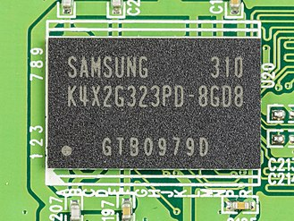

What is LPDDR RAM?
LPDDR SDRAM or Low-Power Double Data Rate
Synchronous Dynamic Random-Access Memory
is the memory that is used in most mobile devices due to its low-power consumption
There have beem many iterations of the LPDDR line of RAM
The most recent is iteration is LPDDR5
which is used in most flagship smartphones

LPDDR SDRAM is used in any mobile device from a phone to a calculator
LPDDR5 is the current most recent iteration of the LPDDR line of RAM.
Which can be found in a maltitude of devices

LPDDR RAM varies widely in price depending on the device it is in
most phones have an option to expand memory like Apple or Samsung provide
different varients with differing amounts of RAM.
What is it Used for?
LPDDR RAM can be found in Graphing calculators
The LPDDR chips are used in mobile devices
such as phones and tabletes
The History of LPDDR Memory
The first created sometime in the early 2000s
The next iteration was LPDDR2 which provided even better power efficiency
After that in 2013 LPDDR3 became mainstream and implemented
into products such as the iPhone 5s and Samsung Galaxy S4
Later on in late 2013 LPDDR4 came out
Finaly, in 2019 LPDDR5 was available